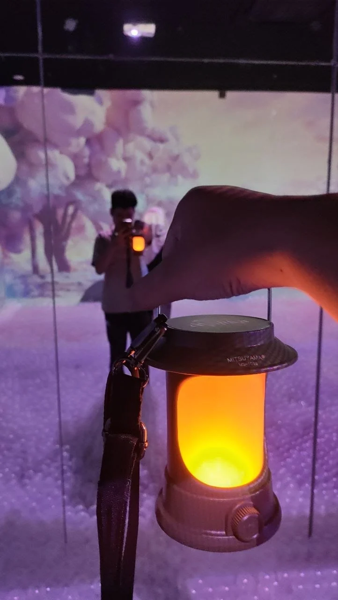
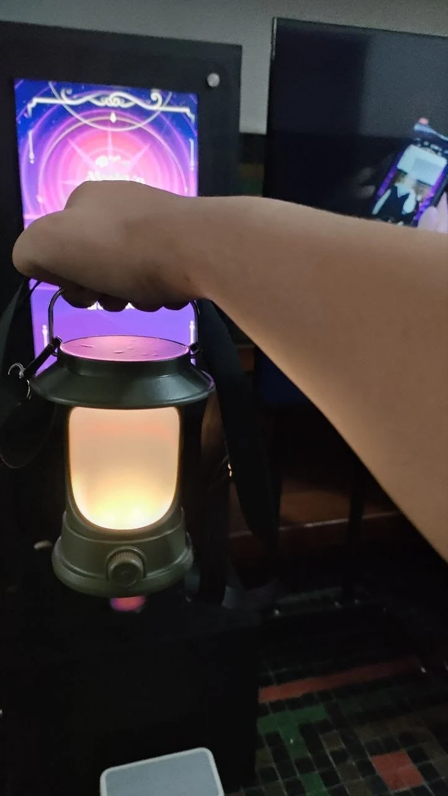
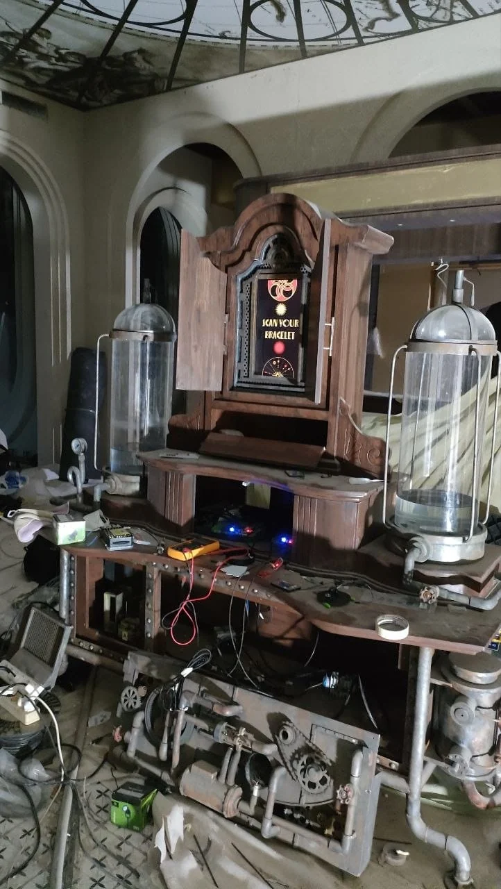

Mechatronics & interactive installations · 2025
Nawa Majika & Skyward installations
Documentation from an internship where physical devices formed part of interactive installations.

Internship context
I was a Mechatronics Engineer Intern at PT Arthatronic Studio Teknologi from 30 June to 9 August 2025.
Available documentation
The photographs document the Nawa Majika installation, interactive lantern devices, and the Skyward project during the internship.
Contribution boundary
The supplied CV and project records do not specify individual implementation deliverables. This page therefore presents the internship context and the available installation documentation.


